← 返回阅读库 · 原论文目录
论文讲解阅读文档 · 机器人学 · v102
DADS Dynamics-Aware Unsupervised Discovery of Skills[1907.01657]
视频时长 00:21:09；讲解文字 8,877 字符；提取讲解画面 40 张。按视频原顺序阅读，每段文字保留时间戳。
文字来自整段视频的自动语音转写，按自然停顿分段，并与 PPT / 论文页面 / 演示画面对齐。未将讲解压缩为摘要；术语、数字和口述公式请结合画面及原论文核对。 阅读稿已校正规范部分明确术语误识别；原始逐字稿和每处修改记录另行保留。
讲解画面为源视频截图（640×360），不是可编辑 PPT 文件。全片按每秒 2 帧扫描内容变化，逐步展开页保留；连续动画保留代表画面。清晰度受源视频限制。
下载完整资料包 · 含离线 HTML、PDF、Word、全部 PPT 画面和字幕。
原论文与材料
Dynamics-Aware Unsupervised Discovery of Skills · 下载完整 PDF（21 页）
按时间阅读
00:00:00–00:00:09 · 画面 001
 00:00:00–00:00:09 · 画面 001
00:00:00–00:00:09 · 画面 001大家好今天我们来介绍 Dynamics AwareUnsupervised Discovery of Skills 这篇论文要解决的问题呢跟我们之前介绍的 NPT 是很接近的就是我们一开始让 agent 与环境交互的时候并没有给他 reward 信息我们希望 agent 能够在这个交互的过程中自己学习出一些有意义的东西来帮助我们后面的 reinforcement learning 的这些任务像 NPT 呢它是自己组织出了一个 policy
00:00:09–00:00:11 · 画面 002
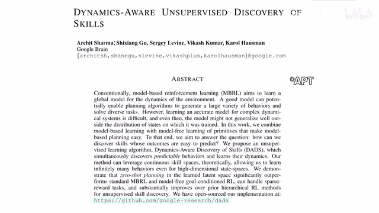
00:00:09–00:00:11 · 画面 00200:00:11–00:00:55 · 画面 003
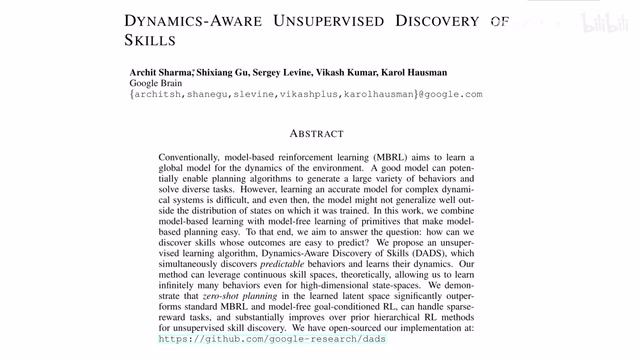
00:00:11–00:00:55 · 画面 003组织出一个好的 representation 那么在本文中呢作者希望是我能够在不断的操作中来聚类出不同的 skills 那么这些 skills 呢那么这些 skills 呢在执行之后呢我们对它的后果是能够比较确定的能够比较方便的预测出来的也就是说我们还维护了一个 model 来预测每一个 skills 在特定的 state 状态下它执行之后会转移到下一个什么样的 state
00:00:55–00:01:34 · 画面 004
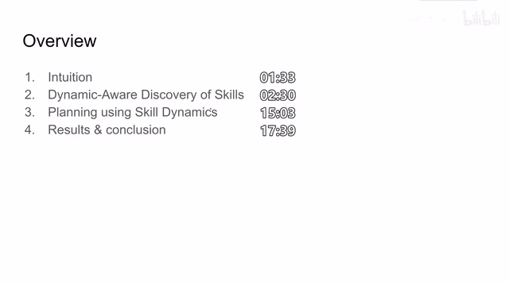
00:00:55–00:01:34 · 画面 004在今天的视频中呢我们会首先介绍本文的 intuition 其实也就是我们刚刚介绍的作者的意图嘛然后呢介绍一下这个 dynamic aware discovery of skills 那么就是作者怎样通过这个非监督的环境指示和环境交互而不接受各种 reward 来训练出组织出不同的 skills 还有一个 model 去预测每一个 skills 它执行后的结果那么然后这个 planning 用 skill dynamics 呢就是当我有了这个 model 当我有了不同的 skills 之后我通过这些 model 做一个 planning 来帮助我们完成各种各样的这个 reinforcement learning 的任务那么最后呢是作者汇报的一些结果和结论那么具体来看本文的核心思想呢是作者希望在 agent 在与环境交互的时候他一开始呢是 answerwise 没有各种 reward 这个 agent 能够意识到我自己能够学到各种各样的技能
00:01:34–00:02:30 · 画面 005
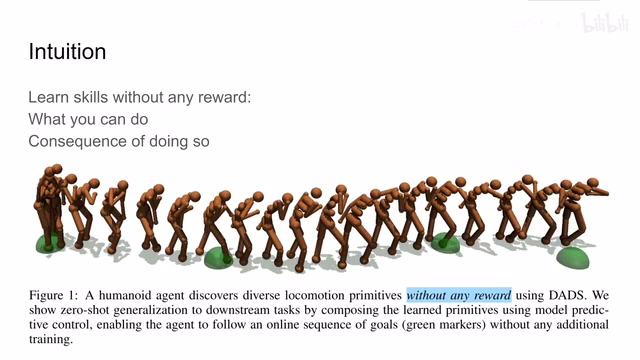
00:01:34–00:02:30 · 画面 005那么什么样的东西可以被称之为技能呢这里呢作者把一串这个 action 的序列叫做技能那么这一串 action 的序列执行完了之后呢我能够比较确定说我执行完之后的系统的状态是什么样的那么这样一串序列呢我们认为它是一个好的技能通过不断的去训练技能同时来训练一个 model 来理解说我当前这个 state 下执行这个技能之后会得到什么样的结果这样呢比起我们说直接训练一个复杂的世界模型去了解世界的运行规则我的模型呢只预测我在特定的状态特定的操作下会产生什么样的结果可能作者认为呢这样对模型更加友好一点更容易训练一点那么继续来看作者的实现我们当然希望我们的 policy
00:02:30–00:04:30 · 画面 006
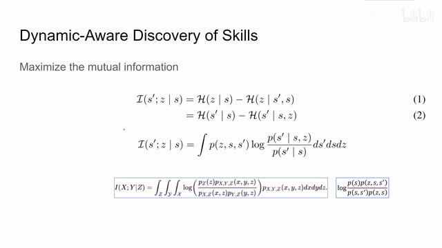
00:02:30–00:04:30 · 画面 006能够尽可能多的去探索各个系统的状态但是同时呢我们也希望对于每个 skill 执行的后果它是非常确定的那么本文的核心思路呢就是最大化这个 mutual information 这个 mutual information 是谁和谁之间呢它的第一个量是 given s 也就是输入当前的系统的状态我能够得到下一个系统的状态 s'这是一个那么第二个呢是我输入当前系统的状态输入当前系统的状态我能够选择一个 skill 那么把这个目标根据它的定义我们可以打开成两种形式那么第一种形式呢是这样子这是两个安卓配的项目像第一项就是我希望我再输入一个 state 之后我能够提出尽可能多样的 skills
使这项最大呢就帮助我们去探索不同的 skills 不同的 state space 是帮助探索的一个作用而减去的这项呢是我输入了当前的 state 和下一个 state s prime 我希望我的 agent 能够告诉我这中间我是执行了哪一个 skill 来得到了这个结果那么 minimize 这一项呢使我们的 agent 能够更加确定每一个 skills 它是做什么用所以这是我们的 mutual information 的一种解读，那么第二种解读我们看到这里是 given 一个 state，我要预测下一个 state prime，这个我希望它的 entropy 大，也就是说我在当前的 state 下，我不希望我的 network 能够很好的预测出 s prime，因为它如果不知道我下面要执行什么样的动作，执行什么样的 skill，它就不应该知道下一个状态是什么，除非我们告诉它我们的操作是什么，也就是说在这里
那么第二项呢就是当我的这个 network 有了当前的 states，有了当前的 scale，那么我就希望它能够比较确定下一个 state 这个 s prime 是什么样子，这两个式子呢都是对这个 mutual information 它的根据定义的不同展开，那么不论你选用哪个式子，选用哪一种理解呢，它都是行得通的，那么在这里呢作者呢就选取了第二个式子，我按照定义呢把它展开
00:04:30–00:05:53 · 画面 007
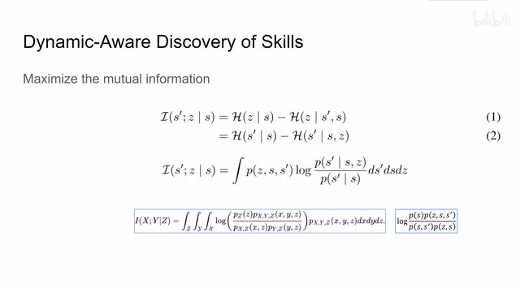
00:04:30–00:05:53 · 画面 007那我没有说 information 它写成积分形式的定义呢，大家可以看到这里，这里的 x y z 呢就对应这个 s prime z 和这个 s，那么首先是三个事件同时发生的概率对应这里，那么中间呢是上面是三个事件同时发生的概率乘以 z 发生的概率，那下面呢是 xz 同时发生的概率和 yz 同时发生的概率，那么中间这个 log 项呢其实写出来呢就是这个样子那这样子我们只要稍加组合一下，把这个 S 的概率和这个 S S'的概率组合一下，那么它就得到这个是 given S S'的概率，同样的把这两个组合一下呢就是 given S Z，那么 S'的概率也就是这个表达式，我们呢也就是希望最大化这么样一个式子，那么当然这个式子里面很多的项目都不是我们在这个实际的实验中能够很好的获取的
像这种 world dynamics 就不能获取，那么怎么办，作者来使用一些数学的工序对继续对这个式子进行处理，我们看到其实这个式子它其实可以写成一个期望的形式，这里作者把它 zs 和 s 这三项它们同时发生的概率给它塞回到期望里面变成了这个样子，这个时候我引入一个 network fileq file
00:05:53–00:07:53 · 画面 008
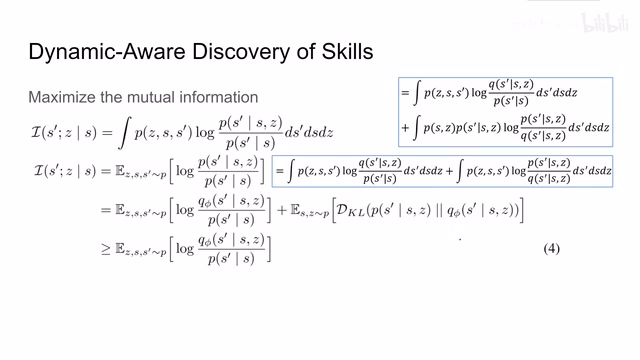
00:05:53–00:07:53 · 画面 008来尝试去逼近 given SZ S' 的它的概率，也就是这个 model，当然加上这个 model 不是没有代价的对吧，我们可以看到这里，假如我的分子的部分乘上一个 Q'那么分母也要有一个 Q'我把分子的 Q'和这个 P given S 和 S'它们组合起来拿到第一项放在这里，那么下面这个分母的 Q'跟上面这个 P given SZ S'它们组合在一起那我把它拆出来那么这样子呢原本一项的这个期望我们就给它拆成了两个期望的核那么左边这一项呢我可以直接根据期望的定义再给它塞成原来这个期望的形式但是右边这一项呢我们还需要做一点数学变化这里呢是 Z S S'这三个变量同时发生的概率那这个时候呢我们应用一点条件概率的定义把这个概率呢拆分成
P SZ 同时发生的概率乘上 P given SZ S'发生的概率，那根据定义当然这个式子跟这个式子是相等的，得到这样一个式子之后呢我们发现首先呢它是一个期望的形式，我们把这个 SZ 和这个概率给它塞回到这个期望里面，那么期望里面呢这一项呢是对 S'的积分，那么它正好形如一个 KL divergence那么这个 K2 divergence 呢就写成了这个样子，分子上这个 P 呢在左边，分母上这个 Q 呢 Q5 呢在右边，因为我们知道 K2 divergence 呢它肯定是正的，所以呢我们就可以说这个 mutual information 它是必须是不小于这个期望的
00:07:53–00:08:04 · 画面 009
00:07:53–00:08:04 · 画面 009那么当我们想提高这个 mutual information 的时候我们就必须从两个路径入手，第一呢就是通过减少这个 KL divergence 它的期望，这样呢使我们的这个 mutual information 距离这个 lower bound 尽量接近，或者说换句话说，我们的 lower bound 更加贴近于这个 mutual information 的真实值对吧？这是第一个，那么第二呢就是在此基础上，我们要尽量抬高这个这个 log 显示的期望
00:08:04–00:08:05 · 画面 010
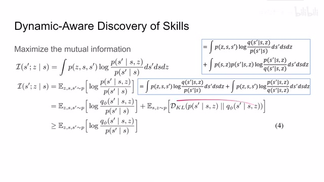
00:08:04–00:08:05 · 画面 01000:08:05–00:08:40 · 画面 011
00:08:05–00:08:40 · 画面 011让他的这个 mutual information 的 lower bound 呢尽可能的高，这样子呢我们就最大化了这个 mutual information 划开两组各表一支。那么我们首先来看这个 KL divergence 我们怎么样压缩它，让它变得更小一点，这一步呢我们叫 titan variational lower bound，也就是让这个 mutual information 和这个 lower bound 尽量接近。那么整个这个 KL divergence 里面呢我们能控制呢就是这个 phi，所以呢我们对这个 phi 来给它求导数
00:08:40–00:09:28 · 画面 012
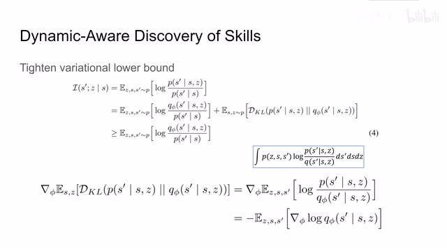
00:08:40–00:09:28 · 画面 012那么根据定义呢，这个 K2 divergence 加期望的形式写出来展开是应该是像这个式子里一样的东西。因为我们是对φ求导，所以呢不影响这个积分，我们就可以把这个求导的符号拿进来，同时呢我们也可以把这个期望给它再塞回去，也就是 Zs 和 S'这三个变量它们构成的期望呢给它塞回去。那这样子呢这个期望里面呢就只剩下这个 log 强了。那因为这个 P 呢它是跟φ没有关系的所以他求导了这一项就去掉了。那么最后的最后，我们的整个 k2.org 的导数就变成了使 logq 对 phi 来求导，其实也就是我们希望 q phi 它尽可能的接近 p。然后我们再看如何提高 lower bound，这个 lower bound 长的是这个样子，你要想使期望值最大，其实它就是一个 reinforcement learning 的问题，我只要把我的 reward
00:09:28–00:09:30 · 画面 013
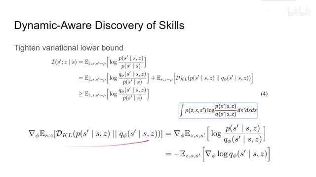
00:09:28–00:09:30 · 画面 01300:09:30–00:09:32 · 画面 014
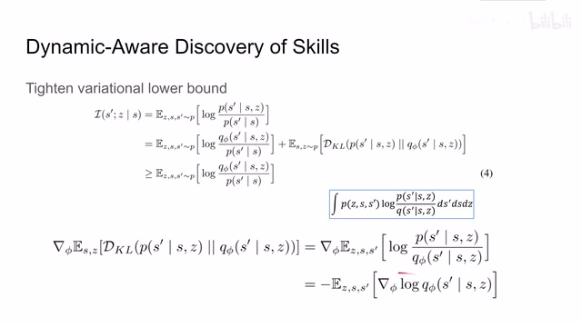
00:09:30–00:09:32 · 画面 01400:09:32–00:09:35 · 画面 015
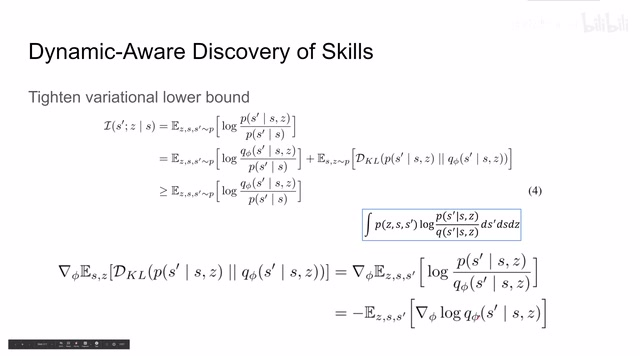
00:09:32–00:09:35 · 画面 01500:09:35–00:09:41 · 画面 016
00:09:35–00:09:41 · 画面 01600:09:41–00:09:42 · 画面 017
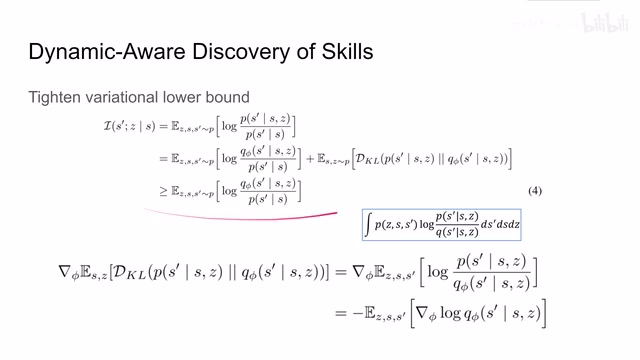
00:09:41–00:09:42 · 画面 01700:09:42–00:09:43 · 画面 018
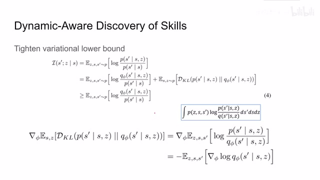
00:09:42–00:09:43 · 画面 01800:09:43–00:09:53 · 画面 019
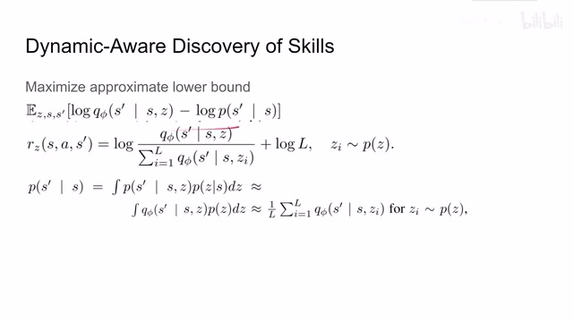
00:09:43–00:09:53 · 画面 019设置成这样的形入这样的式子，那把它当成一个正常的 reforceable learning 的问题来做就可以了。那么看到这个式子前面这一部分是 Q5，这个呢是我们的网络，我们呢可以很方便的计算出前面这一项它的值，但是呢后面这一项这个 P 从 S 到 S'这个概率它是我们不知道的一个变量，所以呢这里作者使用一个非常大胆的近似
00:09:53–00:09:54 · 画面 020
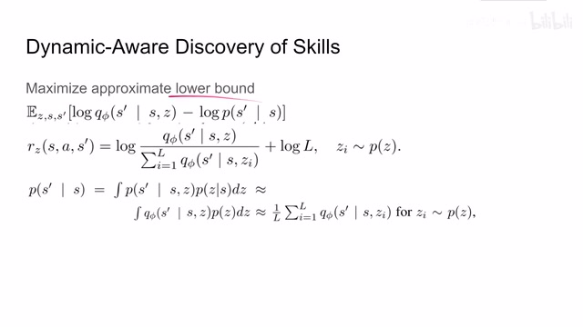
00:09:53–00:09:54 · 画面 02000:09:54–00:11:54 · 画面 021
00:09:54–00:11:54 · 画面 021你看到首先我们根据概率把这一项写开，把 z 引入进来，这是条件概率的定义。然后作者说，我就直接近似 givens 得到的 z 和我鲜艳的 z 的概率它们是一个东西，然后我还近似 q5 就可以替代原来的 p但这个近似呢是可以理解的，因为我们在上一步呢已经做到了说尽可能的让这个 q5 和这个 p 他们的 distribution 呢尽量接近，使用 minimize care divergence 的方法是这两项尽量接近。所以唯一比较玄学的地方呢就是这里这个近似。那么因为这个 z 的概率呢是我们指定的，所以呢我们终于就可以通过采这些 samples 他们的均值来估计住这一项的值
那么最后呢，我们的 reward 写着呢就是这样一个形式。那么这个 L 呢代表是 sample 的数量，那么设定成这样一个 reward 它有什么好处呢？我们可以看到对于这个分子这一项来说，given S given Z，我希望呢它对 S'这个概率极可能的高，也就是说我希望我 Network 呢能够确定我在有了当前的状态之后，我输入一个 scale 会导致下一个状态是什么样子我希望我的网络呢很确定这一项，所以呢它在分子的这个位置。同时呢我们再看到分母这个位置，分母呢是 given 一个 s 之后使用各种各样的这个 skills 都能够得到这个 s prime 它的概率，那么如果把它加起来这个值很高，那说明其实我不管我这个 skills，我直接一个 s 就可以得到这个 s prime，这样子呢就导致我们的模型 q 它对这个 z 的这个输入呢完全就忽视了
00:11:54–00:12:18 · 画面 022
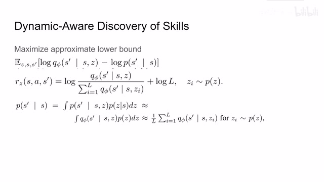
00:11:54–00:12:18 · 画面 022就完全没有想这个 z 的事情了，这显然不是我们想要看到的，所以呢，这一项呢，我们要把它压低，就放在分母上，那么总的来说呢，就形成了这样一个 reward。那么有了刚刚这个 titan lower bound，还有了我们这个 reward，我们终于可以在 unsupervised 的情况下尝试呢，让模型学习出不同的 skills。那么继续来看这个算法吧，所以呢，我们首先会初始化一个 policy pi，一个 model q
00:12:18–00:12:19 · 画面 023
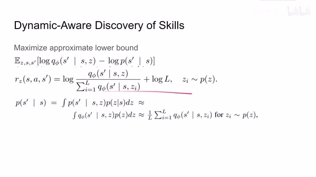
00:12:18–00:12:19 · 画面 02300:12:19–00:12:30 · 画面 024
00:12:19–00:12:30 · 画面 02400:12:30–00:13:57 · 画面 025
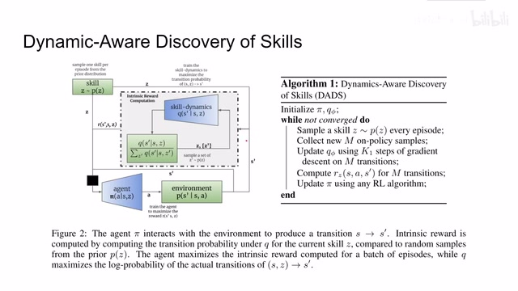
00:12:30–00:13:57 · 画面 025那么在我们没有收敛的时候呢，首先我们根据我们的用户定义的一个概率，我在这个所有的 skills 中采集出一个 skill，然后呢，拿到这个 skill 放到我们的这个 policy 里面，这个 policy 呢，在根据我们当前环境输入的 state 和这个 skill，我们呢，去输出一串的 action，这串 action 呢，一共有 m 个，我们是 unpolicy 的 samples那么有这 m 个 samples 呢，我们就可以用来训练我们的 skill dynamics，也就是我们的模型来预测我们每个 skill 它的未来的作用，根据环境交互的结果，我们知道了 z，我们知道了 s 还有环境给我们的 next state 就是 s prime，我们呢，就可以通过 minimize 前面那个 kl divergence 的方法来训练这个 skill dynamics，这个模型也训练出一个好的这个 puby 出来，那么有了这个好的 puby 之后呢，我们可以根据刚刚我们设计的这个公式
来构造一个 reward，这个 rewards 呢，就可以用来提高我们的 mutual information 的 lower bound，那么把这个 rewards 呢，送回到我们的这个 policy network 里面，我们呢，就可以训练我们的 policy，那么实际在实现的时候呢，这个 sc 它是一个 uniform distribution，就是均匀分布的这么一个 skills，然后呢，这个 reinforcement learning algorithm 呢，用的是这个 sec，就是 soft actor critic，好的，那么经历了这样的训练之后呢
00:13:57–00:13:59 · 画面 026
00:13:57–00:13:59 · 画面 02600:13:59–00:14:49 · 画面 027
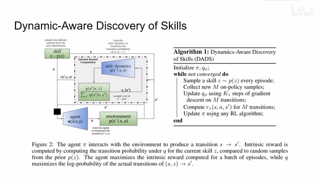
00:13:59–00:14:49 · 画面 027当这个模型收敛的时候呢，我们会有一个好的 agent，然后呢，我们还会有一个好的这个 skill dynamics，那么这个呢，其实就是 model based reinforcement learning 中的这个 model 嘛，世界的模型嘛，那当然呢，作者在本文中呢，并没有使用这个 model based reinforcement learning 的方法，你们在后面呢，会看到，那么这里呢，还有一个小技巧，就是直接通过 S 和 SZ 呢，来预测这个 S'可能是有困难的，而且所以呢，一个常用的 trick 呢，就是我预测 s prime 到 s 他们之间的差值，也就像 resnet 一样，我们有一个 skip connection，然后呢，我们再从 s 来组装成这个 s prime，这样呢，效果是更好的，好的，那么我们的模型呢，在没有环境 reward 的情况下和环境不断的交互，最终呢，学习了不同的 skills 还有他们的还有他们的 policy 和这个 skill dynamics
00:14:49–00:14:50 · 画面 028
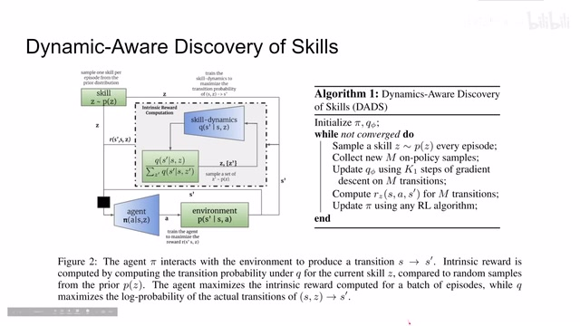
00:14:49–00:14:50 · 画面 02800:14:50–00:14:53 · 画面 029
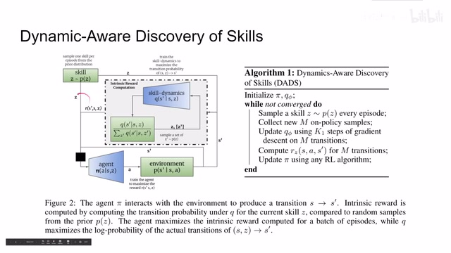
00:14:50–00:14:53 · 画面 02900:14:53–00:15:04 · 画面 030
00:14:53–00:15:04 · 画面 030那么下面呢，我们就需要基于这个 skill dynamics 还有这些 policy 来对我们的模型在实际的任务中呢，进行具体的控制，这里呢，作者为了展示说我的 agent 的 policy 还有 skill dynamics 学的足够好呢，我完全不需要把这个问题呢，变成 reinforcement learning 的问题，我甚至呢，只要做这个 skill dynamics 的 planning 就可以了，这里呢，作者就使用了经典的 MPC，也就是 model predictive control
00:15:04–00:17:04 · 画面 031
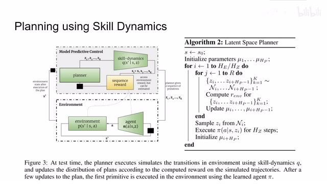
00:15:04–00:17:04 · 画面 031那么具体来说呢，就是我每到一个状态 s，我跟你之前数字化的状态 mu 来去采样出 hp 个来去采样出 hp 个 skills，也就是这一串。那么这串呢，就作为我在当前的这个 state 未来的 hp 的 step 那我需要执行的这个 skills。那么这个 skills 呢，它就是一串序列。然后呢，有了这一串这个控制序列，我们再加上我们的 skill dynamics 这个 model我就可以预测出未来的这一串 state 的变化然后我们对未来的这串 state 对它进行评分也就是算出 reward 来这里作者说 reward 可以通过环境来获得 reward 当然也可以被估计其实在实际操作中以这些 state 来放到环境中去获得它的 reward 是比较困难的所以很多时候你需要有一个额外的结构来对 reward 进行估计
那么这个又带来了很多问题。所以这一步其实是风险蛮大的。但是因为我们在虚拟环境中，而且本文的这些环境基本上都是可以通过当前的 state 直接算出一个好的 reward 来的，所以我们在这里不要太苛求。作者就认为说这个 reward 可以比较轻松的获取。那么有了这个 reward 之后，我们的 MPC 会更新相应的权重。那么对于采样 scale 的权重重新更新了之后我们再做一次采样，再产生一串新的 trajectory。不断的评分，不断的评估。然后呢，更新我们这个 model 的采样的权重。那么最终呢，我们会形成很多条轨迹。然后每条轨迹呢，有他自己的得分。最后呢，我们选择得分最高的那条轨迹，他的第一个 skills，把这个 skills 呢送到我们的这个 policy network 里面。given 当前的 state，当前的 skills。那么呢，我们就可以得到 election
00:17:04–00:17:20 · 画面 032
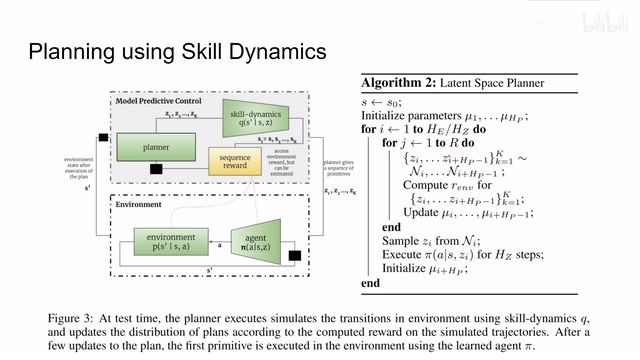
00:17:04–00:17:20 · 画面 03200:17:20–00:17:24 · 画面 033
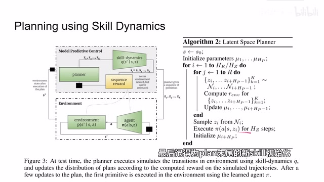
00:17:20–00:17:24 · 画面 033用来执行 HC Steps。以上呢，就是本篇论文从 Unsupervised Learning 学习到 Skills，然后呢到后面这个基于这个 Skill Dynamics 做的这个 Planning 做的控制这一套的流程。下面呢，我们可以直接看到作者汇报的结果。首先呢，我们想知道我们学到的 Skills 它是不是有意义的。那么我们可以看到呢，这里呢，每一条轨迹呢都代表一个不同的 Skills
00:17:24–00:17:39 · 画面 034
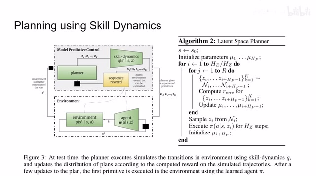
00:17:24–00:17:39 · 画面 03400:17:39–00:18:41 · 画面 035
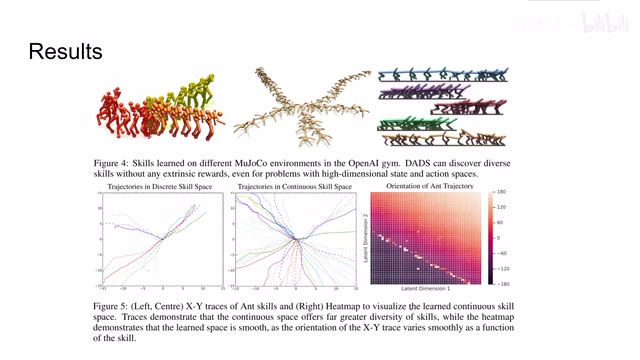
00:17:39–00:18:41 · 画面 035可以看到说的 agent 确实学到不同 skills，他们各不一样，他们达到的目的也不一样。那么以这个案子这个环境为例，那么从底下往下看，我们不同的 skills 给了我们不同的 trajectories。无论使用离散的 skillspace 还是连续的 skillspace，比如离散 skillspace 就是我固定了这个 skill 的数量，那么连续的 skillspace 就是我 skills 就是有几个从-1 到 1 的时数来确定可以看到还是我们的 agent 学到了不同的 skills，每个 skills 是彼此各不相同的。那么右边这个图我们可以看到整个 trajectory 它的方向跟我们 skills 中两个 latent representation 基本上是平滑的对应。也就是说这两个 latent dimension 能够控制我们整个 trajectory 的方向，达到一个好的学习的效果。那么下面看到这组实验是一组比较有意思的实验
00:18:41–00:19:06 · 画面 036
00:18:41–00:19:06 · 画面 036在这里呢，作者认为说我们在 unsurvised 的情况下学习各种 skills 的时候呢，我们如果只是鼓励我们的 policy 去增加多样性去增加 diversity，它并不能够帮助我们学到有用的 skills。而一个有用的 skills 呢，除了它的 diversity 也就是多样性要很强之外，同时呢，它的 trajectories 的标准差也要尽量的低。也就是说这个 trajectories 呢，要尽量的稳定
00:19:06–00:19:07 · 画面 037
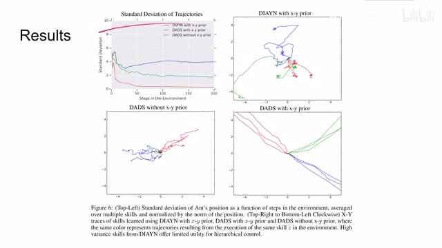
00:19:06–00:19:07 · 画面 03700:19:07–00:20:09 · 画面 038
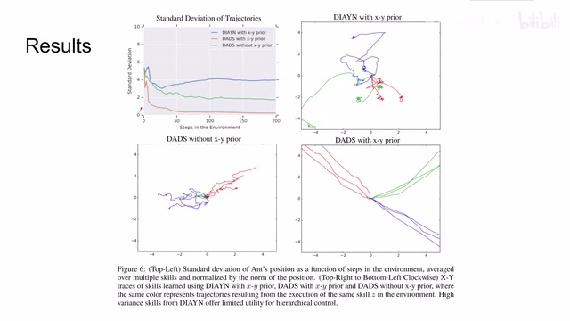
00:19:07–00:20:09 · 画面 038才能说我们学到的 skills 呢是对后面有帮助的，这里呢作者对比了前文的这个 DIYN，它呢是只强调了 skills 的 diversity，所以呢它学得起来的 trajectories 呢就没有那么好看，对于后续的任务呢就不那么实用。同时呢这个 XY prior 是很重要的，这个 XY prior 呢就是就是我限制我的 skill dynamics model 只看到这个 XY，也就是说它对于它的这个状态来说它的 state就是我们当前的 agent 在整个环境中 xy 中的坐标，他也不会去关心 agent 的每一个关节的状态啊，而且这个 skill dynamics 他预测的呢也是下一个 step 这个 xy 他的坐标的值。如果没有这个 xy prior 呢，我们的这个分文提出的模型呢现在的结果呢也不是特别的好，但是如果加入了这个 xy prior 呢，能够非常好的帮助我们的 agent 学到好的 skills
00:20:09–00:21:09 · 画面 039
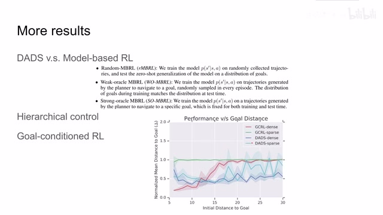
00:20:09–00:21:09 · 画面 039那么最后呢作者还对比了一些 model-based reinforcement learning 的方法啊，还有一些 hierarchical 就是分层次的这个控制的方法，还有 goal-conditioned reinforcement learning。如果你感兴趣的话非常推荐你到这个论文的原文去查看。好的，那么以上就是我对这篇论文的简单的分析，整个来说呢这篇论文的实验性质是很明显的在这个阶段呢我们也没有一个好的框架去评价这篇论文的工作，但是呢而且我们可以看到这篇论文它的 model 呢直接拿的这个系统的状态，它甚至用了这个 sy prior 只是一个很强的 prior。也就是说本文的方法呢在实际应用中呢会有很强的局限性，但是呢这不妨碍本文的思路通过 unsupervised 的方法来学习出不同的 skills 是一个有潜力的思路
那么我们也期待作者在后续的工作中给我们带来更多的惊喜，那么感谢您的收看，再见
00:21:09–00:21:09 · 画面 040
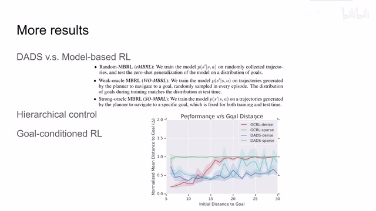
00:21:09–00:21:09 · 画面 040转写与来源说明 · 0 个自动复核提示
保留 47 个原始语音片段，0 个片段触发自动复核提示。提示仅用于定位可能的术语、重复或识别问题，不等于已确认错误。
讲解画面为源视频截图（640×360），不是可编辑 PPT 文件。全片按每秒 2 帧扫描内容变化，逐步展开页保留；连续动画保留代表画面。清晰度受源视频限制。
原视频：paper/合集_2026-10-16_机器人学/[论文简析]DADS Dynamics-Aware Unsupervised Discovery of Skills[1907.01657].mp4
SHA-256：9bb8661db04211785b0d3c72aa32701900fcf741f592ce6224e7b731fa7869b4
全文按视频语音与画面制作。原论文可从上方链接下载；完整资料包保留全文、原始逐字稿、字幕和校对记录。